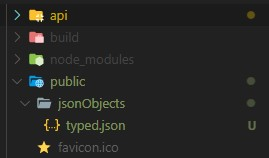
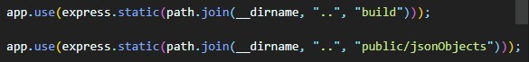
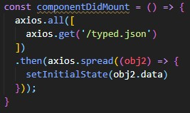

How to Setup a Simple Backend (Express) and Connect to the Front End
This section is mainly based on connecting the backend to the frontend! This because I had followed a great tutorial on create a simple backend which can serve JSON files.
TUTORIAL HYPERLINK
JSON Storage
For my code, my JSONs have been stored in the public folder inside the backend folder. I have added this specific pathway to my backend like this.
I tried my best to not use any absolute pathways to ensure that people can use my code easily.
Query the Backend using the Frontend
My backend is hosted on port 3000. To query the backend manually to obtain I would enter http://localhost:3000/filename.json. This would display said file to the browser. For the frontend we just have to make a function that calls that port and reads the web content.
The function below is called within the same component as my recursive parser.
The function uses Axios which allows you to create HTTP requests within code. Specifically this function is calling for a file called “typed.json” from the path server/public/jsonObjects. Axios then reads all the data and sets it to a react state for storage. This state is then called by the JSON parser for rendering.
That’s really it, please follow the tutorial very thoroughly and ensure you do each step. It may seem a bit annoying to follow but trust me it works. If in doubt you can always pull my code from GitHub to see my own implementation.